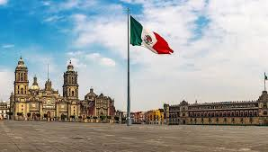

el "Taco al Pastor". Este delicioso manjar consiste en carne de cerdo marinada con una mezcla de especias, generalmente achiote, chile, y otras hierbas, que se cocina en un trompo vertical y se sirve en tortillas de maíz con cebolla, cilantro, piña y salsa. Es un plato emblemático de la gastronomía mexicana y un imprescindible en la oferta culinaria de la capital.

También conocido como la Plaza de la Constitución, es el corazón histórico y político de la ciudad. Aquí se encuentra la Catedral Metropolitana, el Palacio Nacional y otros edificios importantes. Es un sitio lleno de historia y cultura, donde se llevan a cabo eventos culturales, manifestaciones y celebraciones importantes.

Notas relevantes:
Origen del nombre: El nombre
original de la Ciudad de México en náhuatl era
"Tenochtitlan", fundada por los aztecas en el siglo
XIV en una isla en el lago Texcoco. Tras la conquista
española, la ciudad fue reconstruida sobre las ruinas
de Tenochtitlan y rebautizada como Ciudad de México.
Altitud: La Ciudad de México está ubicada a una
altitud promedio de aproximadamente 2,240 metros
sobre el nivel del mar, lo que la convierte en una
de las ciudades más altas del mundo.
Número de museos: La Ciudad de México tiene más de
150 museos, lo que la convierte en una de las
ciudades con mayor concentración de museos en el
mundo.